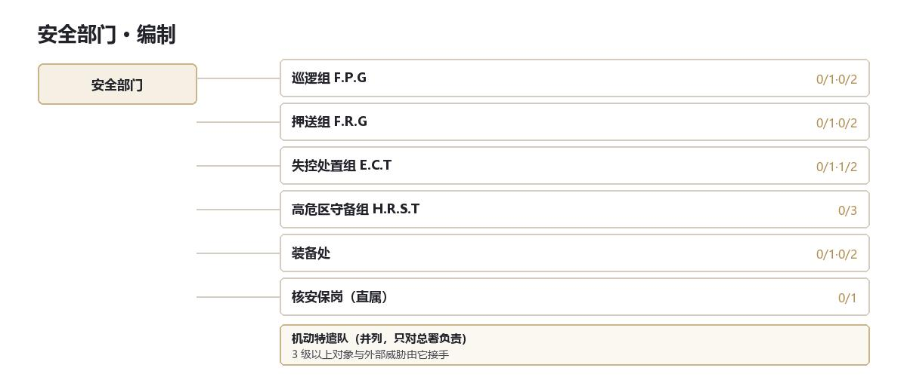
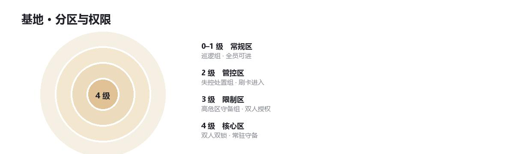
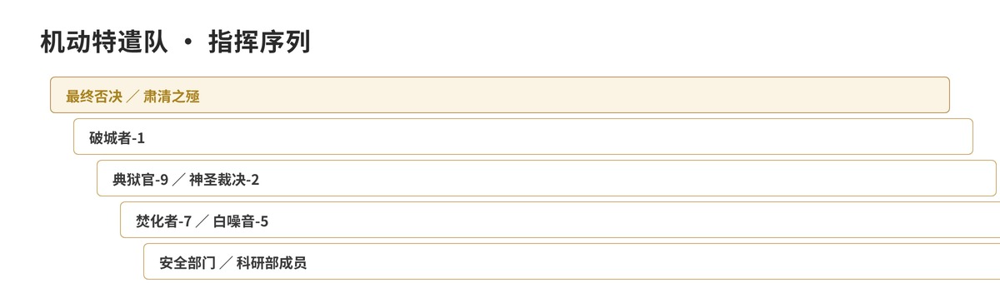

DOC 03 · 安全部门
安全部门 （Security sector）
总部常驻武装 · 秩序、防线与危机第一响应
安全部门是总部唯一的常驻武装力量，负责总部内部秩序、物理防线、日常安全与危机第一响应。
不搞全球外勤，不搞高危专项管控，只守好总部每一层楼的家门口和内部底线。
处置顺序 0–1 级对象由巡逻组按常规流程处置；2 级由失控处置小组介入；3 级及以上立即封区上报，交机动特遣队。这条线不因现场情况临时调整。

一、巡逻组（F.P.G）
职责 总部内部固定路线巡逻、异常排查、监控室值守。
装备 突击步枪；另配非致命武器（电击枪、催泪瓦斯）。
近卫班 从巡逻组里轮，每班两人，负责总部主管与高级研究员的随行。不单设一组——在总部，近卫就是换一条巡逻路线。
二、押送组（F.R.G）
职责 D 级人员的日常看管、押送、点名、暴动镇压。
装备 重型防暴甲、盾牌、警棍、催泪弹、橡皮子弹。
特点 单独编制，装备防暴装备，是安全部门伤亡率最高的岗位之一。
三、失控处置小组（E.C.T）
职责 0–2 级对象的小规模失控、逃逸的初步拦截与控制。
特点 受过专门的失控处置训练，配备专用约束装备。
重要原则：只处理「压得住」的对象。压不住，立刻封区，报机动特遣队。这条原则被称为「第一分钟」，写进了每一本新兵手册的第一页。
四、高危区守备组（H.R.S.T）
职责 4 级管控区的外围守卫，仅在该区域设置。
装备 重型武器，最严格的训练。
原则 4 级对象一旦失控，他们的任务不是打赢，是死守防线、掩护人员撤离，直到机动特遣队抵达。

五、直属岗：核安保岗
职责 总部自毁系统的守卫与操作。不编入任何组，直接对安全主管负责。
编制 三人，两班倒；钥匙由当班组长随身携带，不存柜。
六、全域机动特遣作战集群
与安全部门、情报局平级独立，不列入总部日常序列，只对总署负责。

七、轮值与战备值班
三班制：
| 状态 | 要求 | 说明 |
|---|---|---|
| 当值 | 二十四小时在位 | 装备穿戴完毕，十分钟内可出发 |
| 备勤 | 四小时集结 | 可离开总部，不得离开城区 |
| 休整 | 四十八小时召回 | 训练、检修、写报告 |
轮值周期九十天，轮值表由总署批准。安全委员会可以缓议一次——历史上只用过三次，两次改的是顺序，一次改的是人。
人换，装备不换。破城者的重装备搬不动，固定在总部地下军械库；换的是坐在里面的人。
当值队有现场第一决定权，事后必须提交值班日志。谁当值、谁处置、谁背责任，一条线到底。
不参加轮值的两支：最终否决与肃清之殛——你没法给一把手术刀排班。
八、指挥链
机动特遣队在任何情况下都有权命令所有安全部门成员和情报局成员前往避难或应战。
从大到小：最终否决／肃清之殛 > 破城者 > 神圣裁决 > 焚化者 > 安全部门成员／情报局成员。